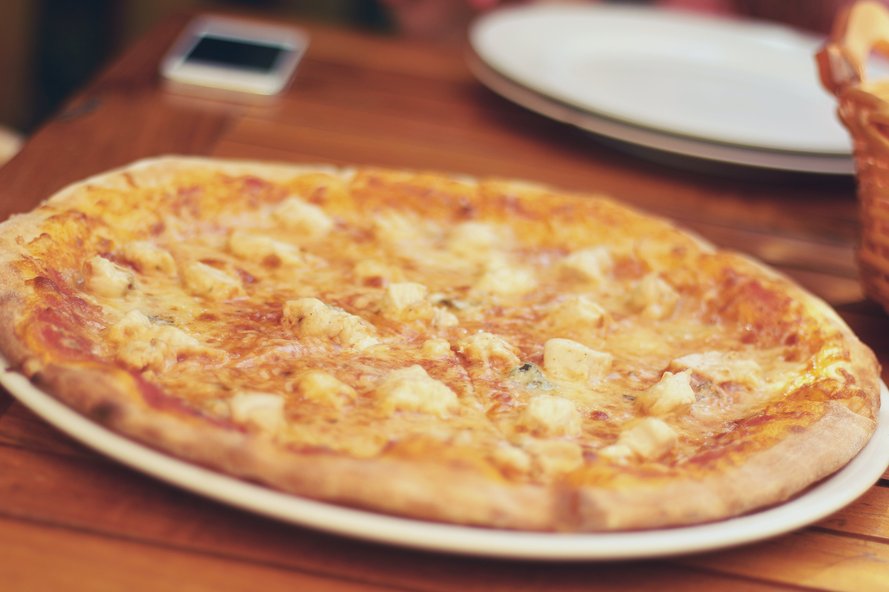

Pizza de Queso

Basic pizza with a blend of cheeses
This pizza uses the dough from a previous lesson and you have the option of using a store bough sauce or you could even atempt to make your own.
ingredients:
- One 9inch premade pizza base.
- 2 large table spoons out pizza sauce.
- A large handfull of grated chedar cheese.
- Torn mozarella
- A couple chunks of brie
Steps:
- preheat your own to 200 centigrade.
- Gently pierce the pizza base with a fork.
- Apply the sauce on the base, ensuring the base is covered in sauce evenly.
- Sprinkle the grated cheese allover the pizza base.
- Apply the mozarella and brie from the centre towards the edges.
- Cook until golden brown and the base is crisp.
- Serve and enjoy.